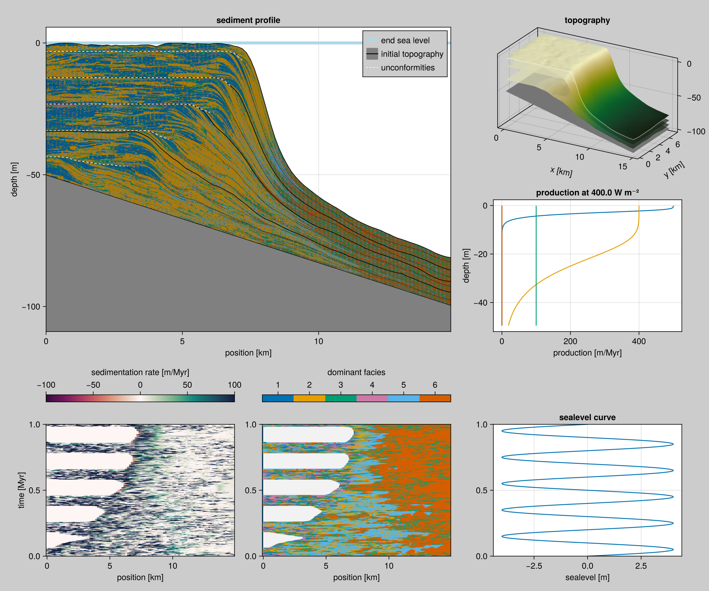

Visualization
Colours
We like to use colorblind safe pallete of colours as described on Paul Tol's website: '#4477AA', '#EE6677', '#228833', '#CCBB44', '#66CCEE', '#AA3377', '#BBBBBB'.
Project Extension
The Project Extension requires a front-end where the available methods are exposed.
file:src/Visualization.jl
module Visualization
export sediment_profile!, sediment_profile, sediment_proportion!, sediment_proportion, wheeler_diagram!, wheeler_diagram, production_curve!,
production_curve, glamour_view!, coeval_lines!, summary_plot, dominant_facies!, sediment_accumulation!
function print_instructions(func_name, args)
println("Called `$(func_name)` with args `$(typeof.(args))`")
println("This is an extension and only becomes available when you import {Cairo,GL,WGL}Makie before using this.")
end
function profile_plot! end
# profile_plot!(args...; kwargs...) = print_instructions("profile_plot!", args)
sediment_accumulation!(args...) = print_instructions("sediment_accumulation!", args)
dominant_facies!(args...) = print_instructions("dominant_facies!", args)
coeval_lines!(args...) = print_instructions("coeval_lines!", args)
sediment_profile!(args...) = print_instructions("sediment_profile!", args)
sediment_profile(args...) = print_instructions("sediment_profile", args)
wheeler_diagram!(args...) = print_instructions("wheeler_diagram!", args)
wheeler_diagram(args...) = print_instructions("wheeler_diagram", args)
production_curve(args...) = print_instructions("production_curve", args)
production_curve!(args...) = print_instructions("production_curve!", args)
stratigraphic_column!(args...) = print_instructions("production_curve!", args)
glamour_view!(args...) = print_instructions("glamour_view!", args)
summary_plot(args...) = print_instructions("summary_plot", args)
sediment_proportion!(args...) = print_instructions("sediment_proportion!", args)
sediment_proportion(args...) = print_instructions("sediment_proportion", args)
fence_diagram(args...) = print_instructions("fence_diagram", args)
fence_diagram!(args...) = print_instructions("fence_diagram!", args)
end # modulefile:ext/VisualizationExt.jl
module VisualizationExt
include("WheelerDiagram.jl")
include("ProductionCurve.jl")
include("StratigraphicColumn.jl")
include("SedimentProfile.jl")
include("GlamourView.jl")
include("SummaryPlot.jl")
include("FenceDiagrams.jl")
endSummary collage

file:ext/SummaryPlot.jl
module SummaryPlot
using CarboKitten.Visualization
import CarboKitten.Visualization: summary_plot
using CarboKitten.Export: read_header, read_volume, read_slice, group_datasets
using CarboKitten.Utility: in_units_of
using HDF5
using Unitful
using Makie
summary_plot(filename::AbstractString; kwargs...) = h5open(fid->summary_plot(fid; kwargs...), filename, "r")
function summary_plot(fid::HDF5.File; wheeler_smooth=(1, 1), show_unconformities=true)
header = read_header(fid)
data_groups = group_datasets(fid)
if length(data_groups[:slice]) == 0 && length(data_groups[:volume]) == 0
@warn "No volume data or slice data stored. Cannot produce summary view."
return nothing
end
fig = Figure(size=(1200, 1000), backgroundcolor=:gray80)
volume_data = if length(data_groups[:volume]) == 0
@warn "No volume data stored, skipping topographic plots."
nothing
else
if length(data_groups[:volume]) > 1
@warn "Multiple volume data sets, picking first one."
end
volume_data = read_volume(fid[data_groups[:volume][1]])
ax = Axis3(fig[1, 3]; title="topography", zlabel="depth [m]", xlabel="x [km]", ylabel="y [km]")
glamour_view!(ax, header, volume_data)
volume_data
end
section_data = if length(data_groups[:slice]) == 0
@warn "No profile data slice stored, taking section of volume data along x-axis."
y_slice = div(size(volume_data.sediment_thickness)[2], 2) + 1
volume_data[:, y_slice]
else
read_slice(fid[data_groups[:slice][1]])
end
n_facies = size(section_data.production)[1]
ax1 = Axis(fig[1:2,1:2])
sediment_profile!(ax1, header, section_data; show_unconformities = show_unconformities)
axislegend(ax1; merge=true, backgroundcolor=:gray80)
ax2 = Axis(fig[4,1])
ax3 = Axis(fig[4,2])
sm, df = wheeler_diagram!(ax2, ax3, header, section_data; smooth_size=wheeler_smooth)
Colorbar(fig[3,1], sm; vertical=false, label="sedimentation rate [m/Myr]")
Colorbar(fig[3,2], df; vertical=false, label="dominant facies", ticks=1:n_facies)
wi = section_data.write_interval
ax4 = Axis(fig[4,3], title="sealevel curve", xlabel="sealevel [m]",
limits=(nothing, (header.axes.t[1] |> in_units_of(u"Myr"),
header.axes.t[1:wi:end][end] |> in_units_of(u"Myr"))))
lines!(ax4, header.sea_level |> in_units_of(u"m"), header.axes.t |> in_units_of(u"Myr"))
ax5 = Axis(fig[2,3])
max_depth = minimum(header.initial_topography)
production_curve!(ax5, fid["input"], max_depth=max_depth)
linkyaxes!(ax2, ax3, ax4)
fig
end
end